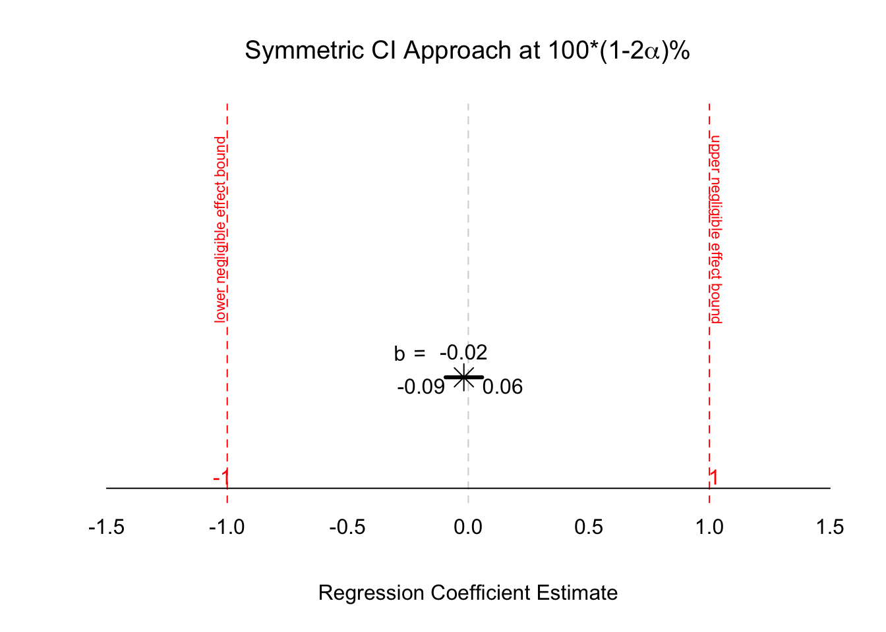
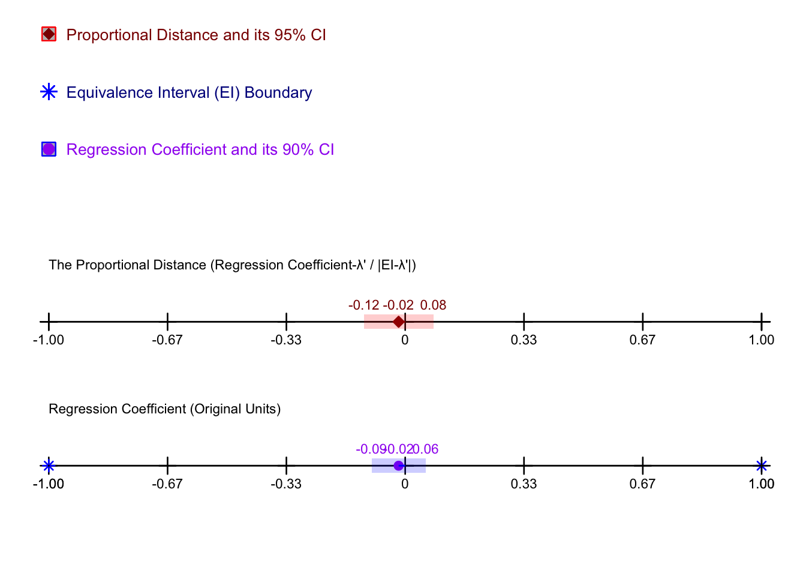
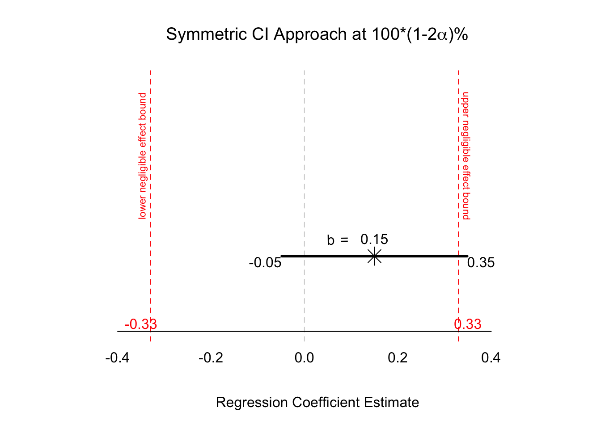
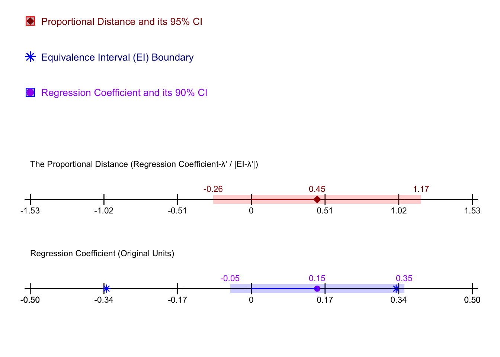

This function evaluates whether a certain predictor variable in a multiple regression model can be considered statistically and practically negligible according to a predefined interval. i.e., minimally meaningful effect size (MMES)/smallest effect size of interest (SESOI). The effect tested is the (partial) relationship between the predictor of interest and the outcome variable, holding all other predictors constant.
Background
Unlike most common null hypothesis significance tests looking to detect a difference or the existence of an effect statistically different than zero, in negligible effect testing, the hypotheses are flipped: In essence,H_0 states that the effect is non-negligible, whereas H_1 states that the effect is in fact statistically and practically negligible.
The statistical tests are based on Anderson-Hauck (1983) and Schuirmann’s (1987) Two One-Sided Test (TOST) equivalence testing procedures; namely addressing the question of whether the estimated effect size (and its associated uncertainty) of a predictor variable in a multiple regression model is smaller than the what the user defines as negligible effect size. Defining what is considered negligible effect is done by specifying the negligible (equivalence) interval: its upper (eiu) and lower (eil) bounds.
The negligible (equivalence) interval should be set based on the context of the research. Because the predictor’s effect size can be in either standardized or unstandardized units, setting eil and eiu is a matter of determining what magnitude of the relationship between predictor and outcome in either standardized or unstandardized units is the minimally meaningful effect size given the context of the research.
Instructions
There are two main approaches to using neg.reg:
The first (and recommended) is by inserting a dataset (data = argument) into the function. If the user/s have access to the dataset, they should use the following set of arguments: data =, formula =, predictor =, bootstrap = (optional), nboot = (optional), and seed = (optional). However, this function also accommodates cases where no dataset is available which is discussed next.
The second approach should be used when the dataset is not available. In this case, users can use the following set of arguments instead: b =, se =, n =, and nop =. In either situation, users must specify the negligible interval bounds (eiu = and eil =).
Other optional arguments and features include: alpha =, std =, test =, plots =, and saveplots =.
Applied Examples
Example 1: “Unlinking” Deliberate Mind Wandering and OCD Symptomatology
Our first example comes from Seli et al. (2017) where the authors investigated the relationship between everyday experiences of mind wandering and OCD symptomatology. Seli and colleagues make a clear distinction between two types of mind wandering: the first is an unintentional, spontaneous mind wandering (MW-S), and the second is a voluntary and deliberate off-task thought (MW-D). This distinction is important because the authors hypothesized that MW-S will show a meaningful relationship with each of the four dimensions of OCD (contamination, responsibility for harm and mistakes, unacceptable thoughts, and symmetry/completeness) whereas MW-D will demonstrate a negligible, or no, association.
Because Seli et al. (2017) sought to demonstrate that MW-D was negligibly (or not at all) associated with each of the four OCD dimensions, we can use the neg.reg function. But, before we do, we must first define what is a (practically) meaningful effect in this context, i.e., the SESOI. Ideally, the SESOI should be derived from substantive knowledge of the effects in the research area, prior to inspecting the data. Numerous approaches to selecting the SESOI are possible; however, these details are beyond the scope of this vignette. For more information on justifying the SESOI, with examples, we recommend reading Anvari and Lakens (2021) and Lakens et al. (2018).
For our purposes, let’s set the SESOI at 5% of the maximum possible score on the Contamination dimension from the OCD scale. The Contamination subscale is measured from 0 to 20, therefore the SESOI was set at b = 1 (measured in unstandardized units of the outcome variable) such that our equivalence interval is (-1, 1). We hence set eil = -1 and eiu = 1. If the observed effect for MW-D and its associated uncertainty falls entirely within the SESOI bounds, from -1 to 1, we can conclude a negligible association between MW-D and Contamination.
With access to the dataset, users should first import their data file into the RStudio environment. The object name under which the imported dataset is saved (e.g., ocd) should then be inserted as the input for the first argument in the neg.reg function, such as data = ocd.
The next argument, formula =, requires the user to specify the regression model consisting of the outcome (i.e., criterion/dependent variable) to the left of the tilde symbol (~), followed by all the predictor variables in the model with the + sign between each predictor name.
Users should identify the exact variable names in the imported dataset they are interested in modelling and pay close attention to lower or capital case. In our example, the first outcome variable is contamination (one of the OCD symptomatology dimensions), labelled here ocd_cont. We have only two predictors in our example model, MW-D and MW-S (MWD + MWS), which then go to the left of the ~, such as formula = ocd_cont ~ MWD + MWS.
The predictor = argument asks users to specify which of the predictors they would like to test for a negligible effect. Because Seli et al. (2017) hypothesized a negligible or no association of MW-D with the outcomes, we specified predictor = MWD in the code example below.
Putting It All Together (when data is available)
library(negligible) # load the packageneg.reg(data = ocd, # name of dataset formula = ocd_cont ~ MWD + MWS, # regression formula predictor = MWD, # name of the predictor of interest eiu =1, # upper bound of SESOI (unstandardized) eil =-1, # lower bound of SESOI (unstandardized) std =FALSE, # using unstandardized units bootstrap =FALSE) # not using bootstrap in example
1
Note that each argument is separated by a comma except for the last argument which precedes the close bracket, indicating the end of the function input.


*** Evaluating Negligible Effects Between Predictor and Outcome in Multiple Regression ***
Unstandardized regression coefficient for MWD:
b = -0.018, 95% CI [-0.109, 0.072]
std. error = 0.046
**********************
Anderson-Hauck (AH) procedure:
Equivalence interval: lower= -1, upper= 1
Anderson-Hauck T statistic = -0.4
p < 0.001
NHST decision: The null hypothesis that the regression coefficient is non-negligible can be rejected. A negligible effect is concluded. Be sure to interpret the magnitude (and precision) of the effect size.
*Note that in rare cases, where p is close to α, NHST decisions using the AH procedure may not match TOST NHST results or the Symmetric CI Approach at 100*(1-2α)% illustrated in the plots.
**********************
Proportional Distance
Proportional distance: -0.018
95% confidence interval for the proportional distance: (-0.115, 0.079)
*Note that the confidence interval for the proportional distance may not be precise with small sample sizes
*******************
In Example 1 above, we used the neg.reg function with access to the raw data to answer whether deliberate mind wandering truly has a negligible association with contamination, partialling out the effect of spontaneous mind wandering. Results from the negligible effect testing approach using the neg.reg function are congruent with Seli et al.’s (2017) conclusion, which was obtained from a statistically nonsignificant difference-based test. It is often the case, however, that results from negligible effect testing contradict negligible association conclusions made using results from a nonsignificant difference-based test; this scenario will be demonstrated in Example 2 in the following section. Example 2 also shows how users can employ the neg.reg function without access to raw data.
Example 2: Personal Control Moderates the Association Between Organizational Stability and Identification
Proudfoot and Kay (2018) predicted that feelings of personal control would moderate the relationship between perceived organizational stability and organization identification. Specifically, they wished to demonstrate that a relationship between organizational stability and identification exists for participants with low personal control (“control threat” condition), but that no such effect is present for participants with high personal control (“control affirmation” condition).
To test their hypothesis, the authors modeled an interaction between organizational stability and personal control on organization identification in their multiple regression analysis. As reported in Study 3, the control × stability interaction (higher-order effect) was indeed statistically significant. Inspecting the simple slopes, the authors found that participants in the “control threat” condition exhibited a statistically significant relationship between stability and identification, whereas participants in the “control affirmation” condition did not, b = 0.15, SE = .12, t(190) = 1.18, p = .24. It was concluded that “for participants who recalled an event wherein they had control, there was no effect of perceived organizational stability on identification” (Proudfoot & Kay, 2018, p. 110).
In this example, we do not have access to the dataset. Still, we can formally test whether the association between perceived organizational stability on identification is indeed negligible for participants in the “control affirmation” condition using the neg.reg function. Specifically, we will need the following:
the regression coefficient point estimate for organizational stability (b = 0.15) and its associated standard error (SE = 0.12),
the sample size used in the analysis (n = 194),
the number of predictors in the multiple regression model (k = 3),
and the nominal Type I error rate (α = .05).
Note that the reported effect and its associated standard error are measured in unstandardized units.
Again, we must identify our definition of practical significance in this context (selecting a SESOI). Let’s consider a SESOI of b = 0.33 (measured in unstandardized units).
We can now plug the input into the neg.reg function’s arguments as demonstrated below
Putting It All Together (when data is unavailable)
neg.reg(b =0.15, # effect size of the predictor of interestse =0.12, # standard error associated with the effectn =194, # sample size used in the analysisnop =3, # number of predictors eiu =0.33, # upper bound of SESOI (unstandardized)eil =-0.33, # lower bound of SESOI (unstandardized)std =FALSE) # using unstandardized units
*** Evaluating Negligible Effects Between Predictor and Outcome in Multiple Regression ***
Unstandardized regression coefficient for predictor of interest:
b = 0.15, 95% CI [-0.087, 0.387]
std. error = 0.12
**********************
Anderson-Hauck (AH) procedure:
Equivalence interval: lower= -0.33, upper= 0.33
Anderson-Hauck T statistic = 1.25
p = 0.068
NHST decision: The null hypothesis that the regression coefficient is non-negligible cannot be rejected. There is insufficient evidence to conclude a negligible effect. Be sure to interpret the magnitude (and precision) of the effect size.
*Note that in rare cases, where p is close to α, NHST decisions using the AH procedure may not match TOST NHST results or the Symmetric CI Approach at 100*(1-2α)% illustrated in the plots.
**********************
Proportional Distance
Proportional distance: 0.455
95% confidence interval for the proportional distance: (-0.263, 1.172)
*Note that the confidence interval for the proportional distance may not be precise with small sample sizes
*******************


Additional Features
Finally, there are additional, optional features included in the function such as using bootstrap (and setting the number of iterations and/or seed) to calculate the standard errors, changing test type from AH (default) to TOST or nominal Type I error from .05 to another, custom rate, saving the resulted plots locally (e.g., as .png, or .jpeg) etc. Users are welcome to test these features following these brief argument definitions:
plots: If TRUE, plot will be generated in the output (highly recommended)
test: "AH" is the default based on recommendation in Alter & Counsell (2023), "TOST" is an additional option
bootstrap: logical, default is TRUE, incorporating bootstrapping when calculating regression coefficients, SE, and CIs
nboot: 1000 is the default. Indicates if other number of bootstrapping iterations is desired
saveplots: FALSE for no, "png" and "jpeg" for different formats
seed: to reproduce previous analyses using bootstrapping, the user can set their seed of choice
Other Considerations
It is necessary to be consistent with the units of measurement. For example, unstandardized negligible interval bounds (i.e., eil and eiu) must only be used when std = FALSE (default). If the effect size (b), standard error (se), and sample size (n) are entered manually as arguments (i.e., without the dataset), these should also be in the same units of measurements. Whereas if the user prefers to specify eiu and eil in standardized unites, std = TRUE should be specified. In which case, any units entered into the function must also be in standardized form. Mixing unstandardized and standardized units would yield inaccurate results and likely lead to invalid conclusions. Thus, users must be cognizant of the measurement units of the negligible interval.
The proportional distance (PD; effect size/eiu) estimates the proportional distance of the estimated effect to eiu, and acts as an alternative effect size measure.
The confidence interval for the PD is computed via bootstrapping (percentile bootstrap), unless the user does not insert a dataset. In which case, the PD confidence interval is calculated by dividing the upper and lower CI bounds for the effect size estimate by the absolute value of the negligible interval bounds.
---title: "Start Using the `neg.reg` Function"subtitle: "From the `negligible` R package"author: "Udi Alter"title-block-banner: trueformat: html: code-tools: source: true toggle: true caption: none toc: true toc-title: Contents toc-location: left theme: light: Litera dark: solar html-math-method: katex css: styles.css code_download: yes code-annotations: hover---## Introduction### GoalThis function evaluates **whether a certain predictor variable in a multiple regression model can be considered statistically and practically negligible** according to a predefined interval. i.e., minimally meaningful effect size (MMES)/smallest effect size of interest (SESOI). The effect tested is the (partial) relationship between the predictor of interest and the outcome variable, holding all other predictors constant.### BackgroundUnlike most common null hypothesis significance tests looking to detect a difference or the existence of an effect statistically different than zero, **in negligible effect testing, the hypotheses are flipped: In essence,** $H_0$ states that the effect is non-negligible, whereas $H_1$ states that the effect is in fact statistically and practically negligible.The statistical tests are based on Anderson-Hauck (1983) and Schuirmann's (1987) Two One-Sided Test (TOST) equivalence testing procedures; namely addressing the question of **whether the estimated effect size (and its associated uncertainty) of a predictor variable in a multiple regression model is smaller than the what the user defines as negligible effect size.** Defining what is considered negligible effect is done by specifying the negligible (equivalence) interval: its upper (`eiu`) and lower (`eil`) bounds.The negligible (equivalence) interval should be set based on the context of the research. Because the predictor's effect size can be in either standardized or unstandardized units, setting `eil` and `eiu` is a matter of determining what magnitude of the relationship between predictor and outcome in either standardized or unstandardized units is the minimally meaningful effect size given the context of the research.## InstructionsThere are two main approaches to using `neg.reg`:- The first **(and recommended)** is by inserting a dataset (`data = ` argument) into the function. If the user/s have access to the dataset, they should use the following set of arguments: `data =`, `formula =`, `predictor =`, `bootstrap =` (optional), `nboot =` (optional), and `seed =` (optional). However, this function also accommodates cases where no dataset is available which is discussed next.- The second approach should be used when the dataset is not available. In this case, users can use the following set of arguments instead: `b =`, `se =`, `n =`, and `nop =`. In either situation, users must specify the negligible interval bounds (`eiu =` and `eil =`). Other optional arguments and features include: `alpha =`, `std =`, `test =`, `plots =`, and `saveplots =`.## Applied Examples### Example 1: “Unlinking” Deliberate Mind Wandering and OCD SymptomatologyOur first example comes from [Seli et al. (2017)](https://psycnet.apa.org/doiLanding?doi=10.1037%2Fa0031438) where the authors investigated the relationship between everyday experiences of mind wandering and OCD symptomatology. Seli and colleagues make a clear distinction between two types of mind wandering: the first is an unintentional, spontaneous mind wandering (MW-S), and the second is a voluntary and deliberate off-task thought (MW-D). This distinction is important because the authors hypothesized that MW-S will show a meaningful relationship with each of the four dimensions of OCD (contamination, responsibility for harm and mistakes, unacceptable thoughts, and symmetry/completeness) whereas MW-D will demonstrate a negligible, or no, association.Because [Seli et al. (2017)](https://psycnet.apa.org/doiLanding?doi=10.1037%2Fa0031438) sought to demonstrate that MW-D was negligibly (or not at all) associated with each of the four OCD dimensions, we can use the `neg.reg` function. But, before we do, we must first define what is a (practically) meaningful effect in this context, i.e., the SESOI. Ideally, the SESOI should be derived from substantive knowledge of the effects in the research area, prior to inspecting the data. Numerous approaches to selecting the SESOI are possible; however, these details are beyond the scope of this vignette. For more information on justifying the SESOI, with examples, we recommend reading Anvari and Lakens (2021) and Lakens et al. (2018).For our purposes, let's set the SESOI at 5% of the maximum possible score on the Contamination dimension from the OCD scale. The Contamination subscale is measured from 0 to 20, therefore the SESOI was set at b = 1 (measured in unstandardized units of the outcome variable) such that **our equivalence interval is (-1, 1)**. We hence set `eil = -1` and `eiu = 1`. If the observed effect for MW-D and its associated uncertainty falls entirely within the SESOI bounds, from -1 to 1, we can conclude a negligible association between MW-D and Contamination.With access to the dataset, users should first import their data file into the RStudio environment. The object name under which the imported dataset is saved (e.g., ocd) should then be inserted as the input for the first argument in the `neg.reg` function, such as `data = ocd`. The next argument, `formula =`, requires the user to specify the regression model consisting of the outcome (i.e., criterion/dependent variable) to the left of the tilde symbol (`~`), followed by all the predictor variables in the model with the `+` sign between each predictor name. Users should identify the exact variable names in the imported dataset they are interested in modelling and pay close attention to lower or capital case. In our example, the first outcome variable is contamination (one of the OCD symptomatology dimensions), labelled here `ocd_cont`. We have only two predictors in our example model, MW-D and MW-S (`MWD + MWS`), which then go to the left of the `~`, such as `formula = ocd_cont ~ MWD + MWS`.The `predictor =` argument asks users to specify which of the predictors they would like to test for a negligible effect. Because [Seli et al. (2017)](https://psycnet.apa.org/doiLanding?doi=10.1037%2Fa0031438) hypothesized a negligible or no association of MW-D with the outcomes, we specified `predictor = MWD` in the code example below.#### Putting It All Together (when data is available)```{r}#| echo: false#| results: hold#| output: falselibrary(haven)library(tidyverse)OCD <-read_sav("/Users/udialter/Library/CloudStorage/GoogleDrive-udi.alter@gmail.com/My Drive/Master's thesis/OCD and MW (Seli et al., 2017).sav") # Uploading datahead(OCD)ocd <- OCD # dublicating dataset for manipulation # renaming columns to slighetly easier namescolnames(ocd) <-c("ID", "sample", "age","gender", "hand", "MWS", "MWD", 'BSCS', 'ocd_cont', 'ocd_resp', 'ocd_unacpthts', 'ocd_symm')head(ocd)# leaving only relevant variables ocd <- ocd %>% dplyr::select("ID", "MWS", "MWD", "ocd_cont", "ocd_resp", "ocd_unacpthts", "ocd_symm")``````{r}library(negligible) # load the packageneg.reg(data = ocd, # name of dataset formula = ocd_cont ~ MWD + MWS, # regression formula predictor = MWD, # name of the predictor of interest eiu =1, # upper bound of SESOI (unstandardized) eil =-1, # lower bound of SESOI (unstandardized) std =FALSE, # using unstandardized units bootstrap =FALSE) # not using bootstrap in example # <1>```1. Note that each argument is separated by a comma except for the last argument which precedes the close bracket, indicating the end of the function input.In Example 1 above, we used the `neg.reg` function with access to the raw data to answer whether deliberate mind wandering truly has a negligible association with contamination, partialling out the effect of spontaneous mind wandering. Results from the negligible effect testing approach using the neg.reg function are congruent with [Seli et al.’s (2017)](https://psycnet.apa.org/doiLanding?doi=10.1037%2Fa0031438) conclusion, which was obtained from a statistically nonsignificant difference-based test. It is often the case, however, that results from negligible effect testing contradict negligible association conclusions made using results from a nonsignificant difference-based test; this scenario will be demonstrated in Example 2 in the following section. Example 2 also shows how users can employ the `neg.reg` function without access to raw data.### Example 2: Personal Control Moderates the Association Between Organizational Stability and Identification[Proudfoot and Kay (2018)](https://www-sciencedirect-com.ezproxy.library.yorku.ca/science/article/pii/S0022103117306832) predicted that feelings of personal control would moderate the relationship between perceived organizational stability and organization identification. Specifically, they wished to demonstrate that a relationship between organizational stability and identification exists for participants with low personal control (“control threat” condition), *but that no such effect is present for participants with high personal control (“control affirmation” condition)*. To test their hypothesis, the authors modeled an interaction between organizational stability and personal control on organization identification in their multiple regression analysis. As reported in Study 3, the control × stability interaction (higher-order effect) was indeed statistically significant. Inspecting the simple slopes, the authors found that participants in the “control threat” condition exhibited a statistically significant relationship between stability and identification, whereas participants in the “control affirmation” condition did not, $b = 0.15, SE = .12, t(190) = 1.18, p = .24$. It was concluded that “for participants who recalled an event wherein they had control, there was no effect of perceived organizational stability on identification” ([Proudfoot & Kay, 2018, p. 110](https://www-sciencedirect-com.ezproxy.library.yorku.ca/science/article/pii/S0022103117306832)). In this example, we do not have access to the dataset. Still, we can formally test whether the association between perceived organizational stability on identification is indeed negligible for participants in the “control affirmation” condition using the `neg.reg` function. Specifically, we will need the following: - the *regression coefficient point estimate* for organizational stability ($b = 0.15$) and its *associated standard error* ($SE = 0.12$), - the *sample size* used in the analysis ($n = 194$), - the *number of predictors* in the multiple regression model ($k = 3$), - and the *nominal Type I error rate* ($α = .05$). Note that the reported effect and its associated standard error are measured in unstandardized units. Again, we must identify our definition of practical significance in this context (selecting a SESOI). Let's consider a SESOI of $b = 0.33$ (measured in unstandardized units).We can now plug the input into the `neg.reg` function’s arguments as demonstrated below#### Putting It All Together (when data is unavailable)```{r}neg.reg(b =0.15, # effect size of the predictor of interestse =0.12, # standard error associated with the effectn =194, # sample size used in the analysisnop =3, # number of predictors eiu =0.33, # upper bound of SESOI (unstandardized)eil =-0.33, # lower bound of SESOI (unstandardized)std =FALSE) # using unstandardized units```## Additional FeaturesFinally, there are additional, optional features included in the function such as using bootstrap (and setting the number of iterations and/or seed) to calculate the standard errors, changing test type from AH (default) to TOST or nominal Type I error from .05 to another, custom rate, saving the resulted plots locally (e.g., as .png, or .jpeg) etc. Users are welcome to test these features following these brief argument definitions:- `plots`: If `TRUE`, plot will be generated in the output (highly recommended)- `test`: `"AH"` is the default based on recommendation in [Alter & Counsell (2023)](https://www.tqmp.org/RegularArticles/vol19-1/p059/p059.pdf), `"TOST"` is an additional option- `bootstrap`: logical, default is `TRUE`, incorporating bootstrapping when calculating regression coefficients, SE, and CIs- `nboot`: `1000` is the default. Indicates if other number of bootstrapping iterations is desired- `saveplots`: `FALSE` for no, `"png"` and `"jpeg"` for different formats- `seed`: to reproduce previous analyses using bootstrapping, the user can set their seed of choice## Other Considerations**It is necessary to be consistent with the units of measurement.** For example, unstandardized negligible interval bounds (i.e., `eil` and `eiu`) must only be used when `std = FALSE` (default). If the effect size (`b`), standard error (`se`), and sample size (`n`) are entered manually as arguments (i.e., without the dataset), these should also be in the same units of measurements. Whereas if the user prefers to specify `eiu` and `eil` in standardized unites, `std = TRUE` should be specified. In which case, any units entered into the function must also be in standardized form. Mixing unstandardized and standardized units would yield inaccurate results and likely lead to invalid conclusions. Thus, users must be cognizant of the measurement units of the negligible interval.The proportional distance (PD; effect size/eiu) estimates the proportional distance of the estimated effect to eiu, and acts as an alternative effect size measure.The confidence interval for the PD is computed via bootstrapping (percentile bootstrap), unless the user does not insert a dataset. In which case, the PD confidence interval is calculated by dividing the upper and lower CI bounds for the effect size estimate by the absolute value of the negligible interval bounds.For additional resources, see:- [Alter & Counsell (2023)](https://www.tqmp.org/RegularArticles/vol19-1/p059/p059.pdf)- [Shiny app](https://udialter.shinyapps.io/negreg-shiny/)- [Interactive Dashboard](https://udialter.github.io/Alter-and-Counsell--2023--Interactive-Dashboard.html)